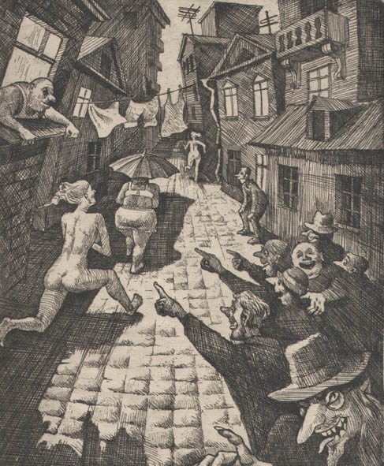
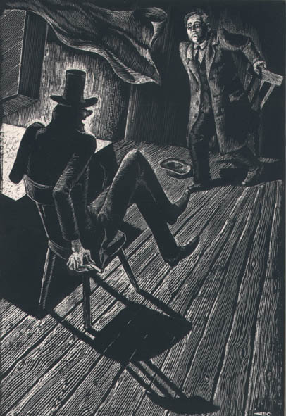

Слава петуху!
Ночной кошмар финдиректора Римского в его кабинете
Краткое содержание главы
Оставшись в опустевшем театре после катастрофического сеанса, Римский заперся в кабинете и дрожащей рукой пытался пересчитать разбросанные бумаги, пока за окном не раздался зловещий шепот. К стеклу прижалось лицо исчезнувшего Варенухи — бледное, безжизненное, не отбрасывающее тени на паркете.
Скрипнула рама, в комнату ворвалась рыжая Гелла, а за нею — обращенный в вампира администратор. Обезумевший от ужаса финдиректор, старея на глазах от седины, замер в углу кабинета. И когда смерть, казалось, была в шаге от него, далеко за пределами Москвы-реки, в одном из уцелевших сарайчиков, прокричал первый утренний петух.
Нечистая сила мгновенно растаяла в форточке, а поседевший за одну минуту Римский бросился на вокзал, чтобы ближайшим курьерским поездом бежать в Ленинград.
Не выдержали нервы, как говорится, и Римский не дождался окончания составления протокола и бежал в свой кабинет. Он сидел за столом и воспаленными глазами глядел на лежащие перед ним магические червонцы. Ум финдиректора заходил за разум. Снаружи несся ровный гул. Публика потоками выливалась из здания Варьете на улицу. До чрезвычайно обострившегося слуха финдиректора вдруг донеслась отчетливая милицейская трель. Сама по себе она уж никогда не сулит ничего приятного. А когда она повторилась и к ней на помощь вступила другая, более властная и продолжительная, а затем присоединился и явственно слышный гогот, и даже какое-то улюлюкание, финдиректор сразу понял, что на улице совершилось еще что-то скандальное и пакостное. И что это, как бы ни хотелось отмахнуться от него, находится в теснейшей связи с отвратительным сеансом, произведенным черным магом и его помощниками. Чуткий финдиректор нисколько не ошибся.
Лишь только он глянул в окно, выходящее на Садовую, лицо его перекосилось, и он не прошептал, а прошипел:
– Я так и знал!
В ярком свете сильнейших уличных фонарей он увидел на тротуаре внизу под собой даму в одной сорочке и панталонах фиолетового цвета. На голове у дамы, правда, была шляпка, а в руках зонтик.

Вокруг этой дамы, находящейся в состоянии полного смятения, то приседающей, то порывающейся бежать куда-то, волновалась толпа, издавая тот самый хохот, от которого у финдиректора проходил по спине мороз. Возле дамы метался какой-то гражданин, сдирающий с себя летнее пальто и от волнения никак не справляющийся с рукавом, в котором застряла рука.
Крики и ревущий хохот донеслись и из другого места – именно от левого подъезда, и, повернув туда голову, Григорий Данилович увидал вторую даму, в розовом белье. Та прыгнула с мостовой на тротуар, стремясь скрыться в подъезде, но вытекавшая публика преграждала ей путь, и бедная жертва своего легкомыслия и страсти к нарядам, обманутая фирмой проклятого Фагота, мечтала только об одном – провалиться сквозь землю. Милиционер устремлялся к несчастной, буравя воздух свистом, а за милиционером поспешали какие-то развеселые молодые люди в кепках. Они-то и испускали этот самый хохот и улюлюканье.
Усатый худой лихач подлетел к первой раздетой и с размаху осадил костлявую разбитую лошадь. Лицо усача радостно ухмылялось.
Римский стукнул себя кулаком по голове, плюнул и отскочил от окна.
Он посидел некоторое время у стола, прислушиваясь к улице. Свист в разных точках достиг высшей силы, а потом стал спадать. Скандал, к удивлению Римского, ликвидировался как-то неожиданно быстро.
Настала пора действовать, приходилось пить горькую чашу ответственности. Аппараты были исправлены во время третьего отделения, надо было звонить, сообщить о происшедшем, просить помощи, отвираться, валить все на Лиходеева, выгораживать самого себя и так далее. Тьфу ты дьявол! Два раза расстроенный директор клал руку на трубку и дважды ее снимал. И вдруг в мертвой тишине кабинета сам аппарат разразился звоном прямо в лицо финдиректора, и тот вздрогнул и похолодел. «Однако у меня здорово расстроились нервы», – подумал он и поднял трубку. Тотчас же отшатнулся от нее и стал белее бумаги. Тихий, в то же время вкрадчивый и развратный женский голос шепнул в трубку:
– Не звони, Римский, никуда, худо будет.
Трубка тут же опустела. Чувствуя мурашки в спине, финдиректор положил трубку и оглянулся почему-то на окно за своей спиной. Сквозь редкие и еще слабо покрытые зеленью ветви клена он увидел луну, бегущую в прозрачном облачке. Почему-то приковавшись к ветвям, Римский смотрел на них, и чем больше смотрел, тем сильнее и сильнее его охватывал страх.
Сделав над собою усилие, финдиректор отвернулся наконец от лунного окна и поднялся. Никакого разговора о том, чтобы звонить, больше и быть не могло, и теперь финдиректор думал только об одном – как бы ему поскорее уйти из театра.
Он прислушался: здание театра молчало. Римский понял, что он давно один во всем втором этаже, и детский неодолимый страх овладел им при этой мысли. Он без содрогания не мог подумать о том, что ему придется сейчас идти одному по пустым коридорам и спускаться по лестнице. Он лихорадочно схватил со стола гипнотизерские червонцы, спрятал их в портфель и кашлянул, чтобы хоть чуточку подбодрить себя. Кашель вышел хрипловатым, слабым.
И здесь ему показалось, что из-под двери кабинета потянуло вдруг гниловатой сыростью. Дрожь прошла по спине финдиректора. А тут еще ударили неожиданно часы и стали бить полночь. И даже бой вызвал дрожь в финдиректоре. Но окончательно его сердце упало, когда он услышал, что в замке двери тихонько поворачивается английский ключ. Вцепившись в портфель влажными, холодными руками, финдиректор чувствовал, что, если еще немного продлится этот шорох в скважине, он не выдержит и пронзительно закричит.
Наконец дверь уступила чьим-то усилиям, раскрылась, и в кабинет бесшумно вошел Варенуха. Римский как стоял, так и сел в кресло, потому что ноги его подогнулись. Набрав воздуху в грудь, он улыбнулся как бы заискивающей улыбкой и тихо молвил:
– Боже, как ты меня испугал!
Да, это внезапное появление могло испугать кого угодно, и тем не менее в то же время оно являлось большою радостью. Высунулся хоть один кончик в этом запутанном деле.
– Ну, говори скорей! Ну! Ну! – прохрипел Римский, цепляясь за этот кончик, – что все это значит?
– Прости, пожалуйста, – глухим голосом отозвался вошедший, закрывая дверь, – я думал, что ты уже ушел.
И Варенуха, не снимая кепки, прошел к креслу и сел по другую сторону стола.
Надо сказать, что в ответе Варенухи обозначилась легонькая странность, которая сразу кольнула финдиректора, в чувствительности своей могущего поспорить с сейсмографом любой из лучших станций мира. Как же так? Зачем же Варенуха шел в кабинет финдиректора, ежели полагал, что его там нету? Ведь у него есть свой кабинет. Это – раз. А второе: из какого бы входа Варенуха ни вошел в здание, он неизбежно должен был встретить одного из ночных дежурных, а тем всем было объявлено, что Григорий Данилович на некоторое время задержится в своем кабинете.
Но долго по поводу этой странности финдиректор не стал размышлять. Не до того было.
– Почему ты не позвонил? Что означает вся эта петрушка с Ялтой?
– Ну, то, что я и говорил, – причмокнув, как будто его беспокоил больной зуб, ответил администратор, – нашли его в трактире в Пушкине.
– Как в Пушкине?! Это под Москвой? А телеграмма из Ялты?
– Какая там, к черту, Ялта! Напоил пушкинского телеграфиста, и начали оба безобразничать, в том числе посылать телеграммы с пометкой «Ялта».
– Ага... Ага... Ну ладно, ладно... – не проговорил, а как бы пропел Римский. Глаза его засветились желтеньким светом. В голове сложилась праздничная картина снятия Степы с работы. Освобождение! Долгожданное освобождение финдиректора от этого бедствия в лице Лиходеева! А может Степан Богданович добьется чего-нибудь и похуже снятия... – Подробности! – сказал Римский, стукнув пресс-папье по столу.
И Варенуха начал рассказывать подробности. Лишь только он явился туда, куда был отправлен финдиректором, его немедленно приняли и выслушали внимательнейшим образом. Никто, конечно, и мысли не допустил о том, что Степа может быть в Ялте. Все сейчас же согласились с предположением Варенухи, что Лиходеев, конечно, в пушкинской «Ялте».
– Где же он сейчас? – перебил администратора взволнованный финдиректор.
– Ну, где ж ему быть, – ответил, криво ухмыльнувшись, администратор, – натурально, в вытрезвителе.
– Ну, ну! Ай, спасибо!
А Варенуха продолжал свое повествование. И чем больше он повествовал, тем ярче перед финдиректором разворачивалась длиннейшая цепь Лиходеевских хамств и безобразий, и всякое последующее звено в этой цепи было хуже предыдущего. Чего стоила хотя бы пьяная пляска в обнимку с телеграфистом на лужайке перед пушкинским телеграфом под звуки какой-то праздношатающейся гармоники! Гонка за какими-то гражданками, визжащими от ужаса! Попытка подраться с буфетчиком в самой «Ялте»! Разбрасывание зеленого лука по полу той же «Ялты». Разбитие восьми бутылок белого сухого «Ай-Даниля». Поломка счетчика у шофера такси, не пожелавшего подать Степе машину. Угроза арестовать граждан, пытавшихся прекратить Степины паскудства. Словом, темный ужас.
Степа был широко известен в театральных кругах Москвы, и все знали, что человек этот – не подарочек. Но все-таки то, что рассказывал администратор про него, даже и для Степы было чересчур. Да, чересчур. Даже очень чересчур...
Колючие глаза Римского через стол врезались в лицо администратора, и чем дальше тот говорил, тем мрачнее становились эти глаза. Чем жизненнее и красочнее становились те гнусные подробности, которыми уснащал свою повесть администратор... тем менее верил рассказчику финдиректор. Когда же Варенуха сообщил, что Степа распоясался до того, что пытался оказать сопротивление тем, кто приехал за ним, чтобы вернуть его в Москву, финдиректор уже твердо знал, что все, что рассказывает ему вернувшийся в полночь администратор, все – ложь! Ложь от первого до последнего слова.
Варенуха не ездил в Пушкино, и самого Степы в Пушкине тоже не было. Не было пьяного телеграфиста, не было разбитого стекла в трактире, Степу не вязали веревками... – ничего этого не было.
Лишь только финдиректор утвердился в мысли, что администратор ему лжет, страх пополз по его телу, начиная с ног, и дважды опять-таки почудилось финдиректору, что потянуло по полу гнилой малярийной сыростью. Ни на мгновение не сводя глаз с администратора, как-то странно корчившегося в кресле, все время стремящегося не выходить из-под голубой тени настольной лампы, как-то удивительно прикрывавшегося якобы от мешающего ему света лампочки газетой, – финдиректор думал только об одном, что же значит все это? Зачем так нагло лжет ему в пустынном и молчащем здании слишком поздно вернувшийся к нему администратор? И сознание опасности, неизвестной, но грозной опасности, начало томить душу финдиректора. Делая вид, что не замечает уверток администратора и фокусов его с газетой, финдиректор рассматривал его лицо, почти уже не слушая того, что плел Варенуха. Было кое-что, что представлялось еще более необъяснимым, чем неизвестно зачем выдуманный клеветнический рассказ о похождениях в Пушкине, и это что-то было изменением во внешности и в манерах администратора.
Как тот ни натягивал утиный козырек кепки на глаза, чтобы бросить тень на лицо, как ни вертел газетным листом, – финдиректору удалось рассмотреть громадный синяк с правой стороны лица у самого носа. Кроме того, полнокровный обычно администратор был теперь бледен меловой нездоровою бледностью, а на шее у него в душную ночь зачем-то было наверчено старенькое полосатое кашне. Если же к этому прибавить появившуюся у администратора за время его отсутствия отвратительную манеру присасывать и причмокивать, резкое изменение голоса, ставшего глухим и грубым, вороватость и трусливость в глазах, – можно было смело сказать, что Иван Савельевич Варенуха стал неузнаваем.
Что-то еще жгуче беспокоило финдиректора, но что именно, он не мог понять, как ни напрягал воспаленный мозг, сколько ни всматривался в Варенуху. Одно он мог утверждать, что было что-то невиданное, неестественное в этом соединении администратора с хорошо знакомым креслом.
– Ну, одолели наконец, погрузили в машину, – гудел Варенуха, выглядывая из-за листа и ладонью прикрывая синяк.
Римский вдруг протянул руку и как бы машинально ладонью, в то же время поигрывая пальцами по столу, нажал пуговку электрического звонка и обмер.
В пустом здании непременно был бы слышен резкий сигнал. Но сигнала не последовало, и пуговка безжизненно погрузилась в доску стола. Пуговка была мертва, звонок испорчен.
Хитрость финдиректора не ускользнула от Варенухи, который спросил, передернувшись, причем в глазах его мелькнул явно злобный огонь:
– Ты чего звонишь?
– Машинально, – глухо ответил финдиректор, отдернул руку и, в свою очередь, нетвердым голосом спросил: – Что это у тебя на лице?
– Машину занесло, ударился об ручку двери, – ответил Варенуха, отводя глаза.
«Лжет!» – воскликнул мысленно финдиректор. И тут вдруг его глаза округлились и стали совершенно безумными, и он уставился в спинку кресла.
Сзади кресла, на полу, лежали две перекрещенные тени, одна погуще и почернее, другая слабая и серая. Отчетливо была видна на полу теневая спинка кресла и его заостренные ножки, но над спинкою на полу не было теневой головы Варенухи, равно как под ножками не было ног администратора.

«Он не отбрасывает тени!» – отчаянно мысленно вскричал Римский. Его ударила дрожь.
Варенуха воровато оглянулся, следуя безумному взору Римского, за спинку кресла и понял, что он открыт.
Он поднялся с кресла (то же сделал и финдиректор) и отступил от стола на шаг, сжимая в руках портфель.
– Догадался, проклятый! Всегда был смышлен, – злобно ухмыльнувшись совершенно в лицо финдиректору, проговорил Варенуха, неожиданно отпрыгнул от кресла к двери и быстро двинул вниз пуговку английского замка. Финдиректор отчаянно оглянулся, отступая к окну, ведущему в сад, и в этом окне, заливаемом луною, увидел прильнувшее к стеклу лицо голой девицы и ее голую руку, просунувшуюся в форточку и старающуюся открыть нижнюю задвижку. Верхняя уже была открыта.
Римскому показалось, что свет в настольной лампе гаснет и что письменный стол наклоняется. Римского окатило ледяной волной, но, к счастью для себя, он превозмог себя и не упал. Остатка сил хватило на то, чтобы шепнуть, но не крикнуть:
– Помогите...
Варенуха, карауля дверь, подпрыгивал возле нее, подолгу застревая в воздухе и качаясь в нем. Скрюченными пальцами он махал в сторону Римского, шипел и чмокал, подмигивая девице в окне.
Та заспешила, всунула рыжую голову в форточку, вытянула сколько могла руку, ногтями начала царапать нижний шпингалет и потрясать раму. Рука ее стала удлиняться, как резиновая, и покрылась трупной зеленью. Наконец зеленые пальцы мертвой обхватили головку шпингалета, повернули ее, и рама стала открываться. Римский слабо вскрикнул, прислонился к стене и портфель выставил вперед, как щит. Он понимал, что пришла его гибель.
Рама широко распахнулась, но вместо ночной свежести и аромата лип в комнату ворвался запах погреба. Покойница вступила на подоконник. Римский отчетливо видел пятна тления на ее груди.
И в это время радостный неожиданный крик петуха долетел из сада, из того низкого здания за тиром, где содержались птицы, участвовавшие в программах. Горластый дрессированный петух трубил, возвещая, что к Москве с востока катится рассвет.
Дикая ярость исказила лицо девицы, она испустила хриплое ругательство, а Варенуха у дверей взвизгнул и обрушился из воздуха на пол.
Крик петуха повторился, девица щелкнула зубами, и рыжие ее волосы поднялись дыбом. С третьим криком петуха она повернулась и вылетела вон. И вслед за нею, подпрыгнув и вытянувшись горизонтально в воздухе, напоминая летящего купидона, выплыл медленно в окно через письменный стол Варенуха.
Седой как снег, без единого черного волоса старик, который недавно еще был Римским, подбежал к двери, отстегнул пуговку, открыл дверь и кинулся бежать по темному коридору. У поворота на лестницу он, стеная от страха, нащупал выключатель, и лестница осветилась. На лестнице трясущийся, дрожащий старик упал, потому что ему показалось, что на него сверху мягко обрушился Варенуха.
Сбежав вниз, Римский увидел дежурного, заснувшего на стуле у кассы в вестибюле. Римский пробрался мимо него на цыпочках и выскользнул в главную дверь. На улице ему стало несколько легче. Он настолько пришел в себя, что, хватаясь за голову, сумел сообразить, что шляпа его осталась в кабинете.
Само собой разумеется, что за нею он не вернулся, а, задыхаясь, побежал через широкую улицу на противоположный угол у кинотеатра, возле которого маячил красноватый тусклый огонек. Через минуту он был уже возле него. Никто не успел перехватить машину.
– К курьерскому ленинградскому, дам на чай, – тяжело дыша и держась за сердце, проговорил старик.
– В гараж еду, – с ненавистью ответил шофер и отвернулся.
Тогда Римский расстегнул портфель, вытащил оттуда пятьдесят рублей и протянул их сквозь открытое переднее окно шоферу.
Через несколько мгновений дребезжащая машина, как вихрь, летела по кольцу Садовой. Седока трепало на сиденье, и в осколке зеркала, повешенного перед шофером, Римский видел то радостные глаза шофера, то безумные свои.
Выскочив из машины перед зданием вокзала, Римский крикнул первому попавшемуся человеку в белом фартуке и с бляхой:
– Первую категорию, один, тридцать дам, – комкая, он вынимал из портфеля червонцы, – нет первой – вторую, если нету – бери жесткий.
Человек с бляхой, оглядываясь на светящиеся часы, рвал из рук Римского червонцы.
Через пять минут из-под стеклянного купола вокзала исчез курьерский и начисто пропал в темноте. С ним вместе пропал и Римский.